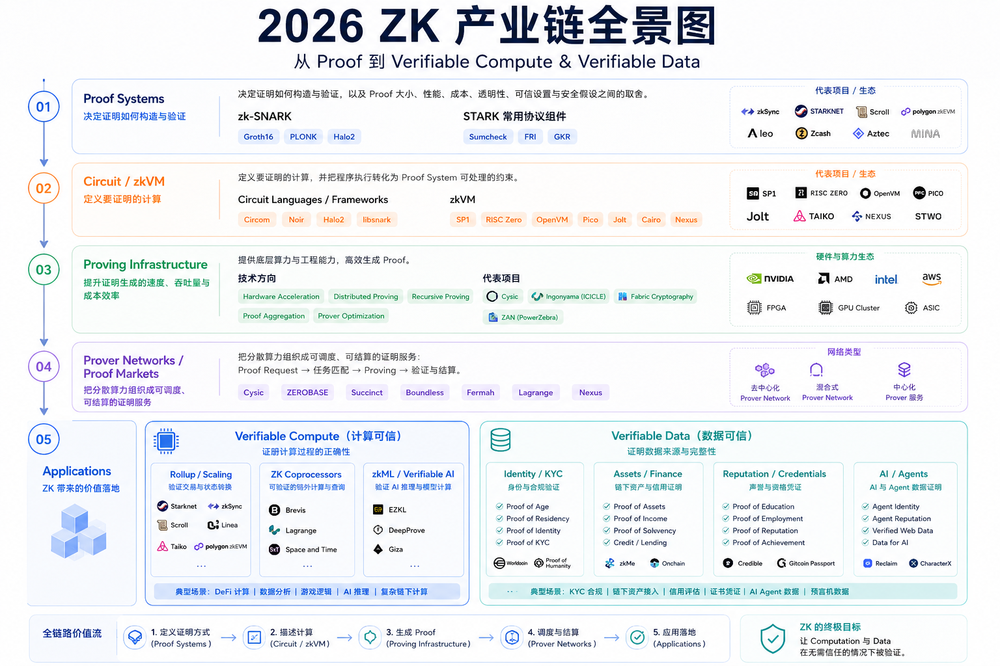

{kind=link}
zk-SNARK
通常具有较短的 Proof 和较快的验证速度，适合区块链、Rollup 等场景。
代表性方案
- Groth16
- PLONK
- Halo2
ZK 正在逐步发展为一套完整的产业，覆盖从底层证明系统到应用落地的多个环节。沿着这条技术栈，从底层一路向上看。

Cryptographic Foundation
Proof Systems 是 ZK 的底层密码学机制，用于生成和验证计算证明。它们决定了证明如何被构造、如何被验证，以及系统在 Proof 大小、Proving 性能、Verification 成本、透明性、可信设置和安全假设之间如何取舍。常见方向主要包括：
通常具有较短的 Proof 和较快的验证速度，适合区块链、Rollup 等场景。
代表性方案
通常不依赖传统可信设置，透明性更强，也适合大规模计算。
代表性技术
Programmable Computation
Proof System 确定了证明的底层机制，但还需要进一步描述究竟要证明什么计算，以及如何把这个计算转换成 Proof System 能够处理的形式。
将具体计算转换为数学约束。开发者需要明确描述输入、输出、计算步骤，以及这些步骤之间必须满足的关系。
语言与工具
让开发者直接证明普通程序的执行，而不必为每个应用重新手写 Circuit。程序执行过程会被转换成可验证的计算证明。
代表项目
Performance & Scale
Circuit / zkVM 与 Proof System 共同定义了需要证明的计算及其证明方式：Circuit / zkVM 描述要证明什么，Proof System 规定如何生成和验证证明。但要真正完成证明，还需要将程序执行转换为可处理的证明任务。Proving Infrastructure 主要负责提升证明生成的速度、吞吐量和成本效率。
用 GPU、FPGA、ASIC 加速 FFT、MSM、Hash 等核心计算。
拆分大型证明任务，分发至多个计算节点。
递归聚合多个 Proof，压缩验证成本。
合并多个独立 Proof，减少链上验证与数据开销。
优化算法、内存、并行调度与资源利用率。
代表项目
Shared Compute
当 Proof 的计算需求越来越大时，每个项目自行购买 GPU、部署并长期维护硬件集群或计算设备，并不一定经济。于是，Proving 开始从单个项目内部的基础设施，逐渐发展为可以被调度、共享和交易的网络化计算服务。
应用提交 Proof Request，说明需要证明的程序或 Circuit、输入数据、证明系统，以及延迟、吞吐量、成本或硬件要求。网络接收请求后，将任务匹配给合适的 GPU、FPGA、ASIC 或其他设备，由 Prover 生成证明。完成后，网络返回 Proof，并负责验证结果、结算任务和分配激励。
代表项目
Real-world Utility
最终，ZK 的价值需要通过应用层体现。应用层主要可以分为两类：计算可信和数据可信。前者关注计算过程和结果是否正确，后者关注数据是否来自可信来源、是否保持完整，以及在不暴露全部原始信息的情况下，能否证明其满足特定条件。
ZK Proof 证明计算过程的正确性，验证者不必重新执行完整计算。
“这个计算是否按照指定规则正确执行？”验证数据来源、传输过程、完整性与披露范围，不必看到全部原始数据。
“这个数据是否真的来自它所声称的来源？”ZK Proof 用来证明计算过程的正确性，而验证者不需要重新执行完整计算。应用方只需提交计算结果和对应 Proof，验证者即可根据预先定义的规则确认结果是否可信。
一条 Rollup 可能会在链下批量处理成千上万笔交易。验证者不需要重新执行每一笔交易，而是验证一个 ZK Proof，确认大量交易是否按照协议规则被正确执行，以及状态转换结果是否正确。
代表项目
应用把链外计算、历史数据查询或复杂状态计算交给链下系统完成，再提交结果和 Proof，让验证者确认这些计算是否按照指定逻辑正确完成。
代表项目
在 AI 场景中，ZK 可以用于证明模型推理或 AI 计算是否基于指定模型、输入和执行规则得到正确结果。
代表项目
这一类应用关注数据是否真的来自它所声称的来源，并且在传输和处理过程中没有被篡改。验证者不一定需要看到全部原始数据，而是可以验证某个数据确实来自可信来源，并满足指定条件。其中非常重要的一条技术路线就是 zkTLS。
zkTLS 可以验证数据是否来自可信网站或服务、是否经过完整的 HTTPS 传输，以及数据处理过程是否符合指定规则。它的核心价值是将 Web2 中的数据转换为可验证、可选择性披露的证明。
代表项目
用户可以生成 Proof of Age、Proof of Residency、Proof of Identity 或 Proof of KYC，证明自己满足特定条件，而不必向每个应用重复提交完整身份资料。
代表项目
用户可以生成 Proof of Assets、Proof of Income、Proof of Solvency，或用于 Credit / Lending 的相关证明，证明自己拥有足够资产、收入达到某个标准，或满足贷款条件，而不必公开全部账户余额、交易记录和其他敏感财务信息。
代表项目
用户可以证明自己的 Education、Employment、GitHub Activity、Social Reputation 或 Gaming Achievements。例如，用户可以证明自己毕业于某所学校、曾在某家公司工作，或拥有一定的开发、社交和游戏成就，而不必公开完整的个人资料和历史记录。
代表项目
系统可以生成 Agent Identity、Agent Reputation、Verified Web Data 以及 Verifiable Data for AI 等证明。AI Agent 可以证明自己的身份、历史表现和数据来源，也可以证明其使用的外部信息确实来自指定网站或可信服务，从而提升 AI 系统的可验证性、透明度和可信度。
代表项目